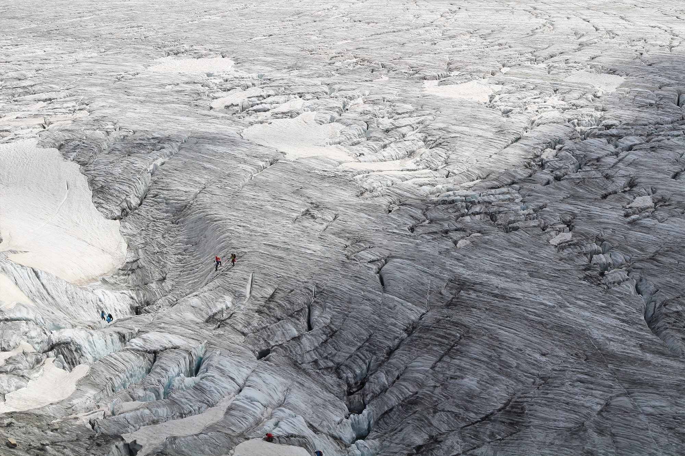
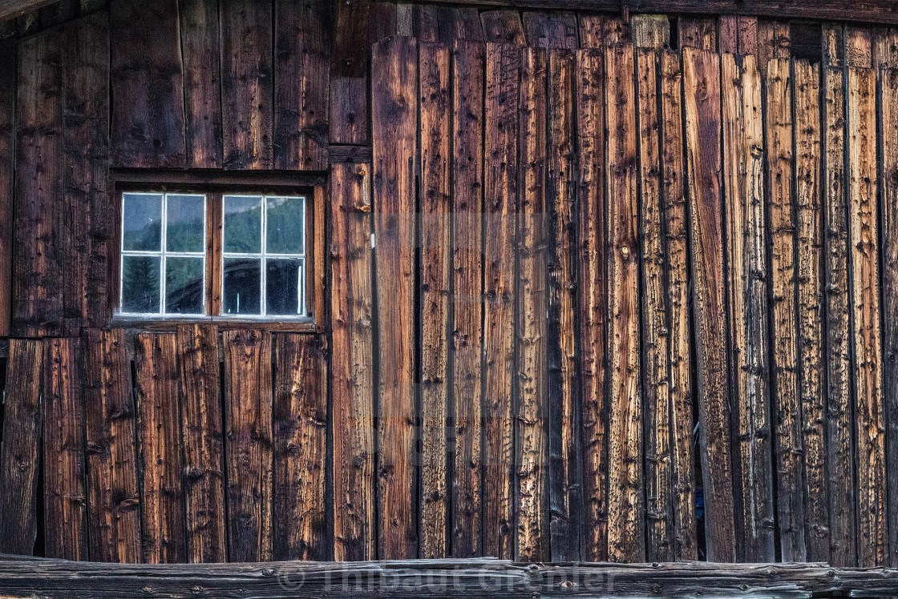
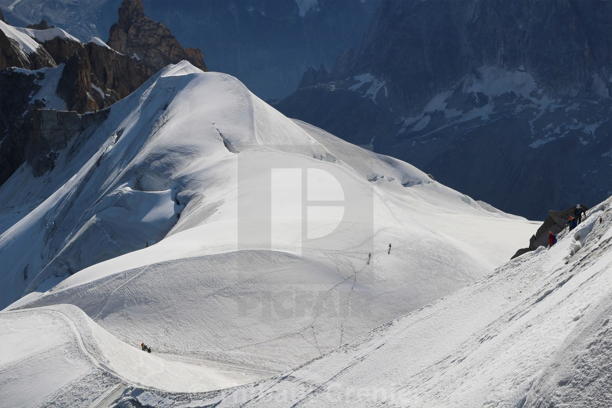
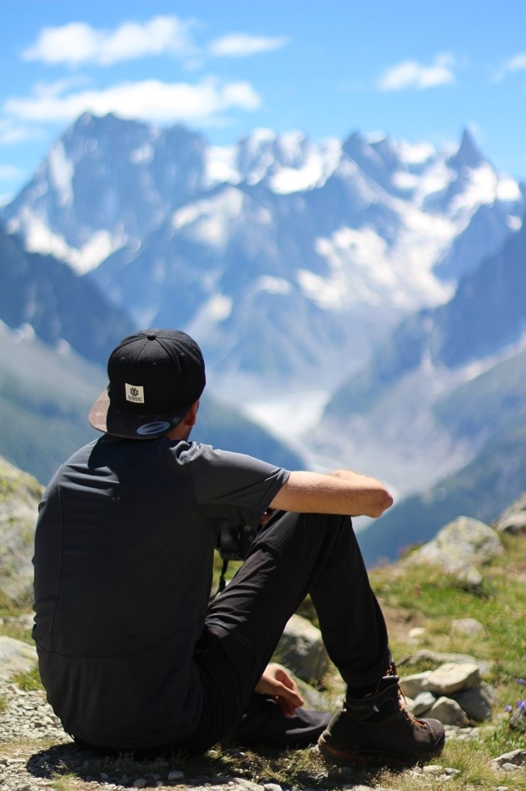
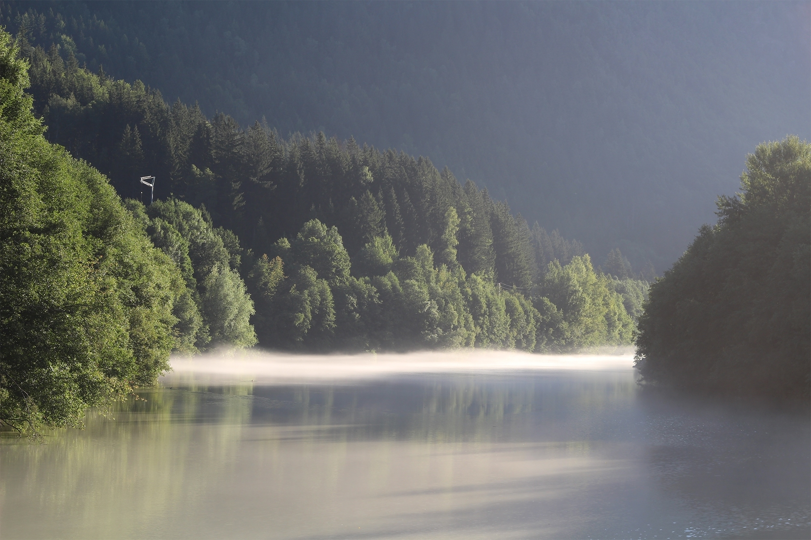
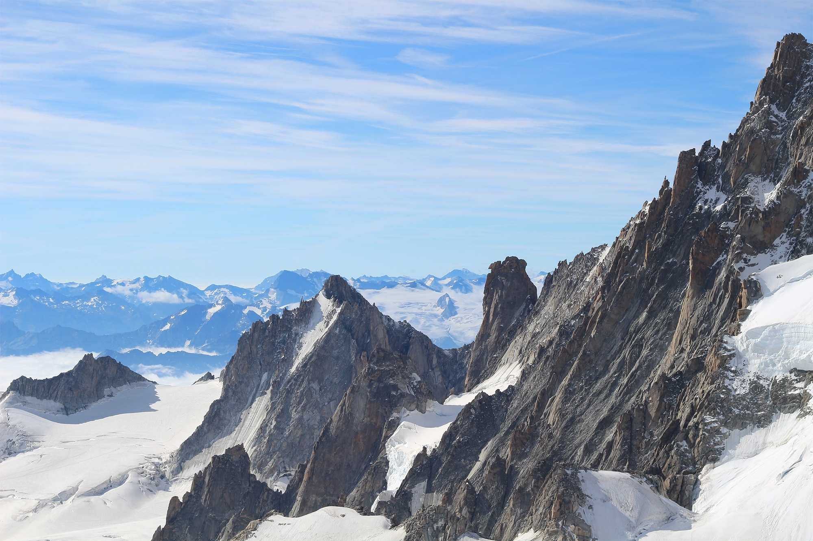
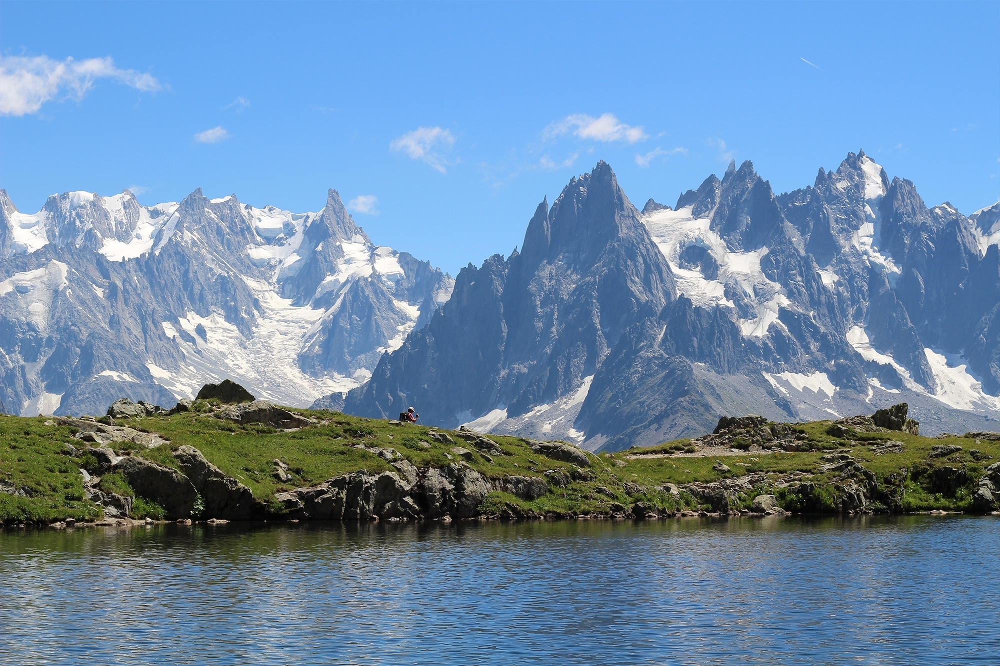
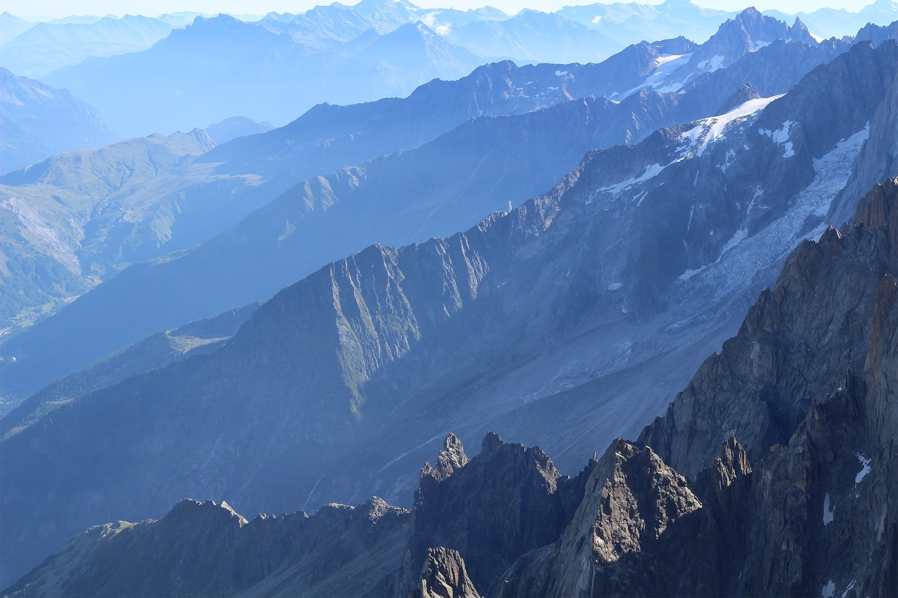
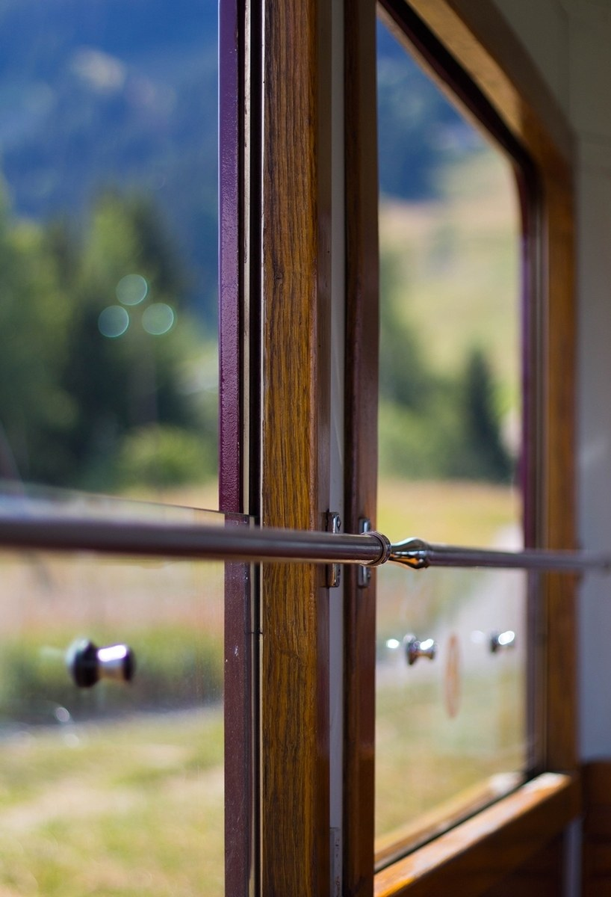

Photography
Trip to Chamonix

50mm | ƒ 11 | ISO 100 | 1/250sec

50mm | ƒ 8 | ISO 400 | 1/4sec

50mm | ƒ 5.6 | ISO 6400 | 1/1600sec

50mm | ƒ 13 | ISO 100 | 1/320sec

50mm | ƒ 1,8 | ISO 100 | 1/4000sec

50mm | ƒ 8 | ISO 100 | 1/125sec

50mm | ƒ 11 | ISO 100 | 1/250sec

50mm | ƒ 10 | ISO 100 | 1/250sec

50mm | ƒ 9 | ISO 100 | 1/160sec

50mm | ƒ 1,8 | ISO 100 | 1/1600sec
50mm Camera reflex & Adobe Lightroom post-prod practice. Buy them or find more on my online store: overlinedesign.picfair.com